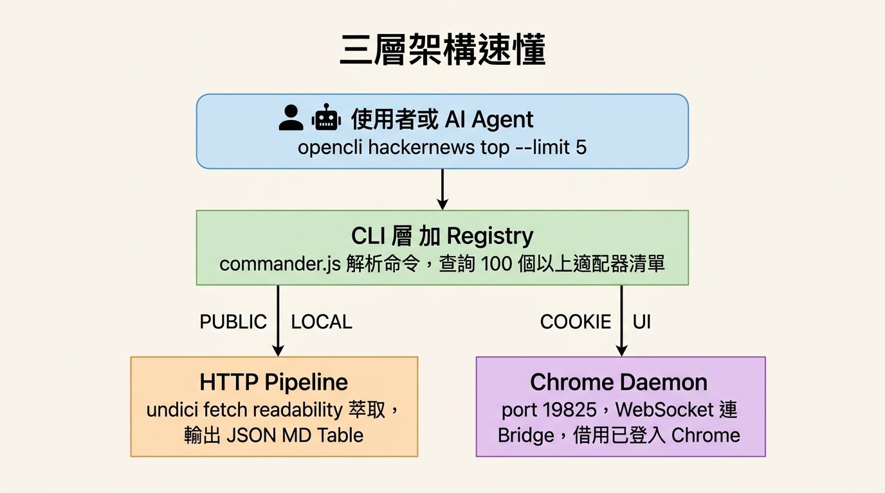

用 Claude Code × opencli 馴服老 ASP.NET 人資系統
ASP.NET WebForms + DevExpress + ViewState 一條龍。子假別、補卡原因都是彈窗式 grid-lookup，閒置 2-3 分鐘 session 直接失效。
補卡單 6 欄、請假單 9 欄，每張要點開下拉、搜尋、選取、設日期時間、儲存、送審。一張單 3-5 分鐘，遲到一次就要開一張。
幾週下來容易累積一堆出勤異常——遲到、忘刷卡、整天沒打卡。光手動填單就要 一個多小時，加上分類比對更耗心力。
沒有 RPA、沒有 Selenium、沒有公司 IT 開 API。
opencli browser 直接 attach 你正在用的那個 Chrome 分頁，沿用 SSO 登入態，靠 CDP + DOM 操作。
一行 opencli 進來，自動分流走「純 HTTP」或「接你的 Chrome」兩條路

公開資料（HN 熱榜、天氣、bilibili）走純 HTTP undici fetch，零 LLM、超快。
HR 系統要登入 → WebSocket 接你的 Chrome Bridge Extension，借用已登入 session 對 DOM 操作。
圖片來源：OpenCLI Explainer Series（jackwener/OpenCLI）
不需密碼、不需 WebDriver。透過 Chrome extension 把已登入的分頁變成 AI 可控的 DOM。
state：列出帶 [N] 的可點元素click N / type N "text"：用 index 操作eval <JS>：跑 JS（含 cross-frame）screenshot / get / network：抓畫面、值、API 流量about:blank。for x in $VAR 在 zsh 不分詞，批次只跑 1 圈。用 shell function 逐筆呼叫。state 編 index。用 cross-frame eval + DevExpress client API 繞。EditForm.aspx?
ProgID=WATT0021900
&FormMode=Add
日期 / 時間 / 上下班
用 DevExpress API
SetValue('000…001')
= 忘刷卡
state → grep<li title=儲存>
看單號出現
單況 = 底稿
ProgID=
WATT0022500
click B1Img
iframe 載入
keyword 搜尋
+ click DXCBtn0
時數自動算
= 7.5h
病假必填
填「病假」就過
idx 會飄
每次重抓
補卡原因可以 SetValue('00000…01') 一步繞過 popup；但子假別 SetValue 會失效，因為「假別編號」要靠 server callback 帶出來。必須真的透過 popup 點選「選取」按鈕，才會觸發 callback、自動計算「請假時數」、通過儲存驗證。
送審會 ping 主管（outward-facing、難回收），所以 AI 絕不自動送審。流程是：先把單據填好存「底稿」（可改可刪），等人說 OK 才送。
/EditForm.aspx?...&FormMode=View&FormID=<FID>
state → grep [N]<li title=送審> → opencli browser click N
FlowConfirm.aspx iframe（id=popupHelper_CIF-1）— 等 ~5 秒
btnOK_I：
img.title 變「簽核中」
一個下午搞定一段時間累積下來的出勤異常
CLAUDE.md — 系統 + 操作手冊，可重複利用leave-analysis-*.md — 假別額度與方案比較about:blankfor x in $FORMIDS 只跑 1 圈[N]contentDocument.click() 進 iframe 點SetValue 繞過 popup，存檔報「假別額度」state + grep，別存舊 index 重用AskUserQuestion 期間 session 失效把繁瑣交給 AI，把判斷留給自己
對自家公司的內部系統，AI 跟工具不需要新 API，
只要能看見 DOM，就能變成自己的 RPA。